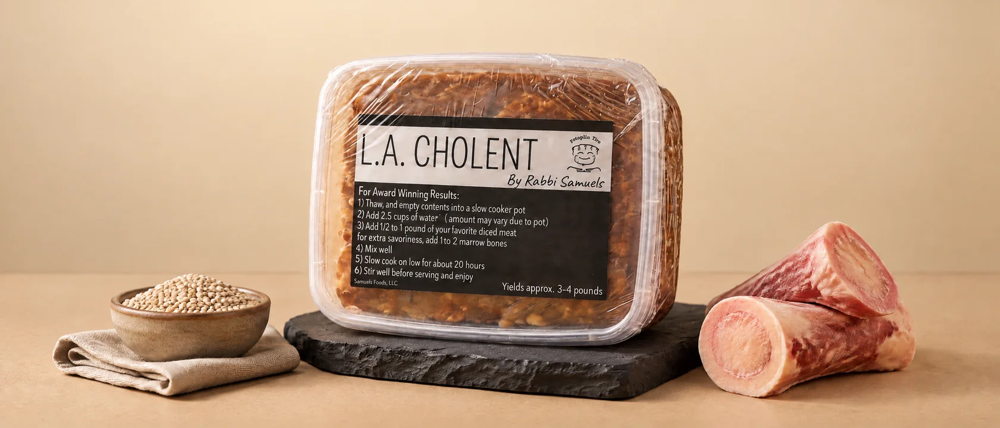
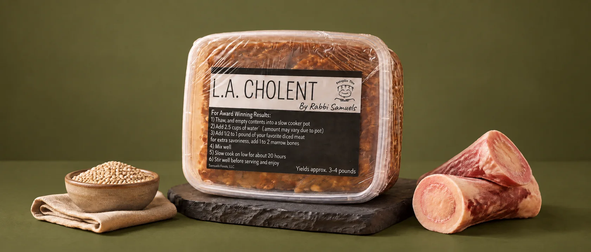
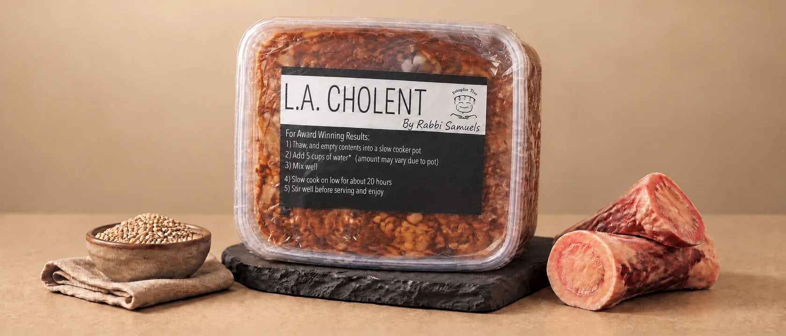

Medium
Feeds 4 to 6, about ₪16 a person
Add your own meat or keep it parve: ₪55
₪100
Order now0hours on low,
while you do Shabbos
Convenient and consistent.
A higher standard of flavor.
A raw kit for your crock pot, in Original, Spicy, Heimish or Gluten-Free. Add water and cook on low for about 20 hours.

Feeds 4 to 6, about ₪16 a person
Add your own meat or keep it parve: ₪55

10% offFeeds 8 to 12, about ₪15 a person
Add your own meat or keep it parve: ₪85

18% offFeeds 16 to 24
Sizes are customizable depending on the number of guests
Messages customers sent us on WhatsApp, in their own words.
A customer, on WhatsAppThank you! The Cholent was amazing!! Such clear easy instructions and awesome consistency and flavor!
A customer, on WhatsAppGut voch. Thank you so much it was completely polished off and was really amazing. We told the oylam that it was the famous LA cholent
A customer, on WhatsAppHeyyy!!! Was so amazing!!!! Was a little bit of an issue cuz we barely had any left for shabbos 🙈🙈 Thanks so much was legit heaven!!
A customer, on WhatsAppWOW IT WAS SOO DELICIOUS ברוך השם! May HaShem bless you! 🙏 Mamash perfect in flavor and consistency and everything!!
A customer, on WhatsAppHiiii gv! The cholent was a huge hit! It was delish!
A customer, on WhatsAppHey, we loved ur cholent so much last week! Can we get again this week?
A customer, on WhatsAppEpic thank you so much for delivering!! I’m super excited my friend from LA highly recommended as well from valley Torah
A customer, on WhatsAppUr cholent was amazing!! We really enjoyed. Thank you thank you ❤️❤️
A customer, on WhatsAppHi! You beat me to it! We loved it! TY!!
A customer, on WhatsAppThank you! It was amazing!